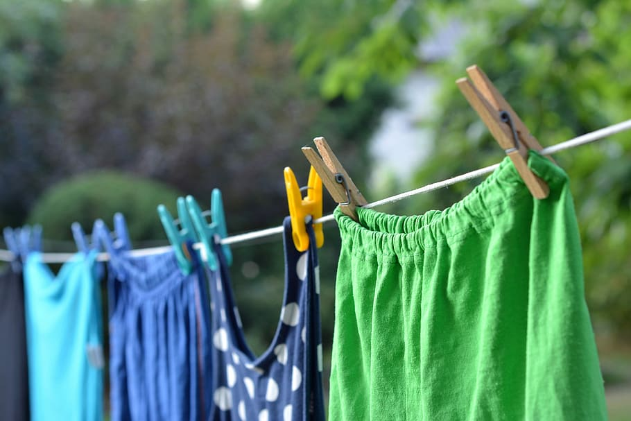

Consejos para preparar la maleta
Viajar a otro país siempre es emocionante, pero hay algo que siempre nos da quebraderos de cabeza: el momento de hacer la maleta. A todos nos gustaría teletransportar nuestro armario a las antípodas, pero aún no es posible.
Aquí les dejamos unos buenos consejos de profesionales viajeros que todo aquél que se adentre en la aventura australiana debe conocer:
Cosas imprescindibles en la maleta
- Pasaporte
- Visado de estudiante impreso
- Dinero en efectivo (Dólares Australianos) y al menos una tarjeta de crédito/débito (no olvides consultar con tu banco)
- Una lista de números de contacto en caso de emergencia
- Prescripción médica traducida al inglés en caso de que necesites de algún medicamento concreto
- Gafas de sol con cristales de calidad (si son polarizadas mejor) ¡El sol en Australia puede ser muy traicionero!
- Cámara de fotos, baterías y cargador
- Ordenador portatil. Será vuestro principal aliado a la hora de buscar trabajo, alojamiento y contactos en OZ, así como para contactar con Australian Way para cualquier cosa que necesitéis. No olvidéis que siempre podéis usar los ordenadores de la escuela.
- Un teléfono móvil liberado. ¡Se puede usar whatsapp con España con tu tarjeta australiana!
- Algo de ropa limpia y un pequeño neceser (siempre llevando botes de medidas homologadas). Nuca se sabe cuándo se puede extraviar o retrasar tu maleta.
Lista de prendas que no pueden faltar en tu maleta
- Camisetas de manga corta y de tirantes
- Ropa interior. Cuanto más tengáis de ésto, menos tendréis que pasar por la lavandería.
- Pantalones cortos y alguno largo
- Bañador y chanclas para poderlas usar también en las duchas de algunos backpackers y caravan parks cuando viajemos
- Alguna chaqueta y sobre todo un chuvasquero nunca vienen mal. Paraguas de viaje para los menos atrevidos.
- Zapatillas cómodas y algún calzado impermeable
- Alguna sudadera o jersey
- Pijama cómodo
- Sombrero o gorra para protegeros del sol siempre es imprescindible para cuando viajemos (sobre todo por el outback)